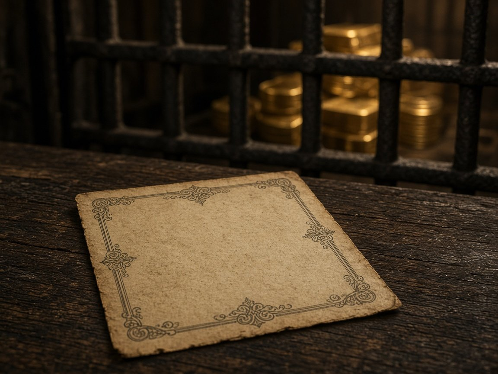
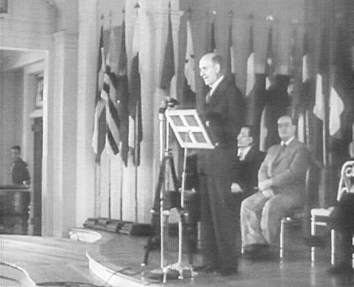
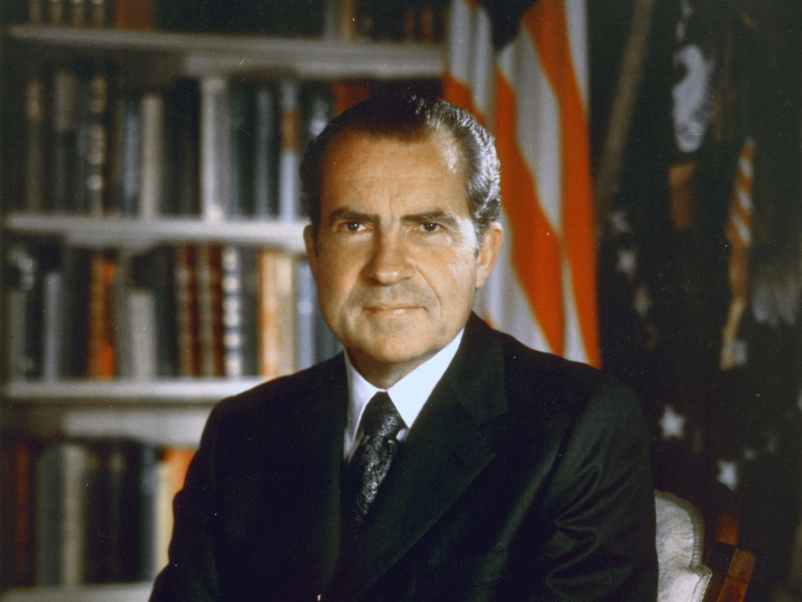

Saca un billete de la cartera y míralo un momento. Ninguna ventanilla te daría oro a cambio y, aun así, lo aceptan en cualquier tienda. Hace poco más de un siglo, la gente vio cómo esa promesa de oro empezaba a romperse; hace algo más de cincuenta años, se cerró del todo. Lo que se decidió entonces en parlamentos y conferencias sigue hoy dentro de nuestro bolsillo, y recordarlo ayuda a entender por qué el valor del dinero depende tanto de que se cuide bien.
En el artículo anterior vimos cómo el dinero pasó a basarse en la confianza: más papeles que oro en la caja, días de pánico en que todos querían lo suyo a la vez y bancos centrales que nacieron para sostener el sistema.
Pero detrás de cada billete seguía habiendo una promesa: poder cambiarlo por oro. Hoy contamos cómo esa promesa se fue apagando.
El patrón oro, una promesa de convertibilidad
Durante el siglo XIX y hasta comienzos del siglo XX, muchos países sostuvieron aquella promesa de una manera formal. El patrón oro consistía en fijar el valor de una moneda en una cantidad determinada de oro y en comprometerse a cambiar el papel por el metal, si se cumplían las condiciones de convertibilidad.
Para entenderlo de una manera sencilla, imagina un billete de entonces: no era el oro en sí, pero representaba una cantidad concreta de oro que se podía reclamar. El papel circulaba, y detrás existía una promesa vinculada al metal.
1914: la guerra interrumpe la promesa
En 1914 estalló la Primera Guerra Mundial. Los países europeos suspendieron la convertibilidad, introdujeron controles de cambios y financiaron la guerra, en buena medida, con deuda que se convertía en nuevo dinero. Mantener la promesa de cambiar el papel por oro se volvió entonces mucho más difícil.
Reino Unido fue un caso particular. El 5 de agosto de 1914, el ministro de Hacienda, David Lloyd George, explicó en la Cámara de los Comunes que no era necesario suspender los pagos en oro. Formalmente, la libra no dejó de ser convertible. Pero el Gobierno pidió a los ciudadanos que no acapararan oro, y en la práctica cambiar billetes por metal quedó muy limitado.
El patrón oro clásico quedó interrumpido.
Una promesa vale lo que vale la confianza en quien la hace.
El difícil regreso al oro
Cuando la guerra terminó, muchos países quisieron volver a aquella promesa. El 28 de abril de 1925, Reino Unido anunció su regreso al patrón oro.
Pero aquel regreso no resultó sencillo. Años después, la crisis de 1929 y la Gran Depresión pusieron otra vez el sistema bajo una presión enorme. El 21 de septiembre de 1931, Reino Unido abandonó el patrón oro.
Aun así, aquello no significó que el oro desapareciera de inmediato del sistema financiero internacional. Su papel continuó durante décadas, aunque la relación entre el dinero y el metal fue cambiando.

Bretton Woods: una última gran referencia
En julio de 1944, cuando la Segunda Guerra Mundial todavía no había terminado, delegados de 44 naciones se reunieron en Bretton Woods, en el estado de Nuevo Hampshire, para acordar un nuevo sistema monetario internacional. De aquella conferencia nacieron el Fondo Monetario Internacional y lo que más tarde se conocería como el Banco Mundial.

El acuerdo era, en esencia, otra forma de promesa. Los países fijaban el valor de sus monedas en relación con el dólar de Estados Unidos, y el dólar, a su vez, se definía en relación con el oro. Las autoridades monetarias extranjeras podían cambiar dólares por oro a un precio fijo: 35 dólares la onza.
El papel seguía circulando. Detrás todavía existía una referencia al metal. Pero aquella promesa ya era más lejana: no significaba que cualquier persona, en cualquier calle, pudiera acercarse a una ventanilla y cambiar su billete por oro. Era una convertibilidad pensada, sobre todo, para el sistema internacional.
15 de agosto de 1971: se corta el último hilo
El 15 de agosto de 1971, el presidente de Estados Unidos, Richard Nixon, anunció que suspendía —según dijo, de forma temporal— la convertibilidad del dólar en oro. Aquella decisión puso fin a ese vínculo oficial entre el dólar y el metal.

El dinero fiduciario: la confianza como respaldo
A partir de entonces, el dinero que utilizamos ya no lleva consigo la promesa de poder cambiarse por oro. Es lo que se llama dinero fiduciario: su valor no proviene de un metal que podamos reclamar, sino de la confianza en que seguirá siendo aceptado y en que quien lo emite cuidará de su valor. La palabra viene del latín fiducia, que significa confianza.
Llegamos hasta aquí, en buena medida, sin verlo y sin querer: desde aquellos recibos que circulaban porque los vecinos no venían todos a la vez, hasta un sistema en el que el papel —y, más adelante, el apunte en una cuenta— se sostiene porque confiamos en que los demás también lo aceptarán.
Si hoy pagamos casi sin tocar un billete, con una tarjeta o con el móvil, ¿dónde está realmente nuestro dinero y qué lo sostiene?
En el próximo artículo hablaremos del dinero de hoy: el del billete, el de la tarjeta y el del móvil, y de cómo hemos llegado a pagar sin ver el oro, y a menudo sin ver siquiera el papel.
Fuentes
- Sobre el patrón oro como promesa de convertibilidad, la suspensión de la convertibilidad en los países europeos en 1914 para financiar la guerra, el regreso de la libra en 1925, la Gran Depresión y la salida de 1931, y el sistema de Bretton Woods (1944-1971): Banco de España, Elena Martínez-Ruiz y Pilar Nogues-Marco, Crisis cambiarias y políticas de intervención en España, 1880-1975, Estudios de Historia Económica n.º 66, 2014, consultado el 13 de noviembre de 2026.
- Sobre la postura de Reino Unido en agosto de 1914 (no se suspendieron formalmente los pagos en oro): Hansard de la Cámara de los Comunes, 5 de agosto de 1914, «State Financial Provisions», consultado el 13 de noviembre de 2026. Sobre David Lloyd George como ministro de Hacienda (Chancellor of the Exchequer) entre 1908 y 1915: GOV.UK, «Past Chancellors of the Exchequer», consultado el 13 de noviembre de 2026.
- Sobre la fecha en que Reino Unido anunció su regreso al patrón oro: Hansard de la Cámara de los Comunes, 28 de abril de 1925, «Return to Gold Standard», consultado el 13 de noviembre de 2026.
- Sobre la fecha en que Reino Unido abandonó el patrón oro: Hansard de la Cámara de los Comunes, 21 de septiembre de 1931, «Message from the Lords» (aprobación del Gold Standard (Amendment) Bill), consultado el 13 de noviembre de 2026.
- Sobre la conferencia de Bretton Woods de julio de 1944, las 44 naciones, la creación del Fondo Monetario Internacional y del Banco Mundial, y la paridad de 35 dólares la onza de oro: Federal Reserve History, «Creation of the Bretton Woods System», consultado el 13 de noviembre de 2026. Véase también Oficina del Historiador del Departamento de Estado de Estados Unidos, «Bretton Woods-GATT, 1941–1947», consultado el 13 de noviembre de 2026.
- Sobre el anuncio del 15 de agosto de 1971 que suspendió la convertibilidad del dólar en oro: Oficina del Historiador del Departamento de Estado de Estados Unidos, «Nixon and the End of the Bretton Woods System, 1971–1973», consultado el 13 de noviembre de 2026.
- Sobre qué es el dinero fiduciario (del latín fiducia, confianza): Banco de España, «¿Qué es el dinero fiduciario?», consultado el 13 de noviembre de 2026.
- Fotos: «Gold bullion bars.jpg» (CC0), «Morgenthau Bretton Woods opening 1944.jpg» (Archivos Nacionales de Estados Unidos, dominio público) y «Nixon 30-0316a.jpg» (Oliver F. Atkins, dominio público), todas en Wikimedia Commons, consultado el 13 de noviembre de 2026.